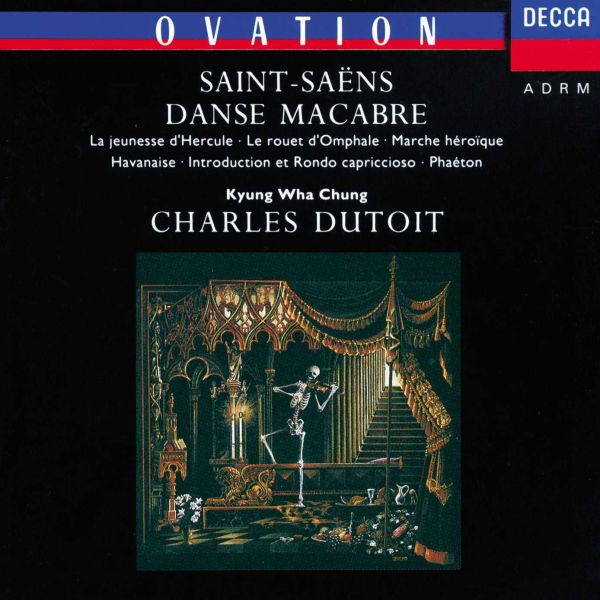
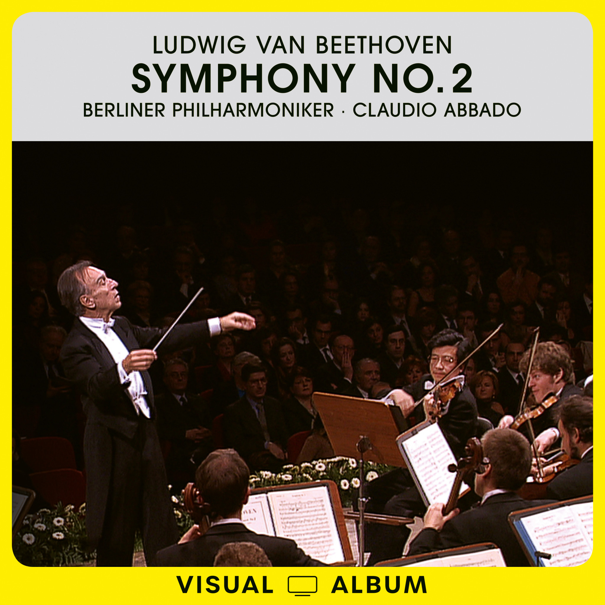
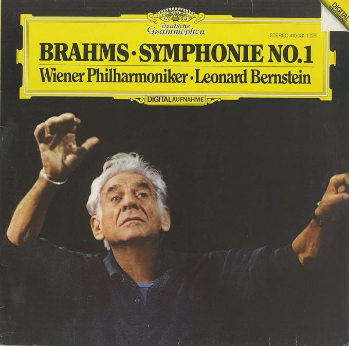

Personal / Outside the lab
Gallery
Books, classical recordings, Chinese calligraphy, and a few other interests I return to outside engineering.
Calligraphy
I practice Chinese calligraphy as a way to stay connected to language and cultural heritage. One of my past series drew inspiration from a classic Chinese television series.
Sports
Soccer has been part of my life for years. It is a welcome change of pace from research and engineering.
Reading
Life hangs, don't let go

I Left My Homework in the Hamptons

The Address Book

Making Liu Che - The Emperor of Valiant
Classical Music

Saint-Saëns: Danse Macabre
Beethoven: Symphony No.2
Brahms: Symphony No.1Personal Style
Personal style and collections are also part of this gallery.